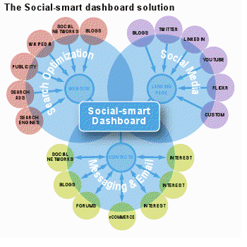

"Social media is like a snowball rolling down the hill. It's picking up speed & a few years from now, it's going to be the standard" & therefore we at Media create digital marketing & technological applications across all social media platforms.
"If Facebook were a country, it would be the 3rd largest country in the world with the highest per capita income."
Media strives to help your brand engage with the consumers, reach them on various social networking sites, blogs & micro blogging platforms thus creating & managing brand pages on social networking sites like Facebook, twitter, Myspace & LinkedIn. With the implementation of analytical tools Media provides information as to what people are talking about your brand on the web across blogs & forums, so that you have a real time consumer feedback at your fingertips. Media helps you to respond to what consumers are saying, managing negative posts & build positive influence.
MEDIO-MATIC 1.0 (MoM): BEYOND THE WHAT TO WHY…………
Media provides you with this tool thereby providing flexibility, web-based social media monitoring and engagement platform that lets you view relevant conversations happening around your brand and products in real time. We aggregate those conversations – saving you lots of legwork – and put them into visuals that make analysis and measurement meaningful and actionable.
With the help of this tool we provide you proper insights which help combine the coverage and depth of the brand in the form of demographics, geographic information, influence and entity extraction. The client then is thoroughly updated who is participating and where conversations are being held which in turn helps decision making, trend analysis and deriving meaningful intelligence from raw information.
TOUCH OVER TECH 1.6 (TOT): CUSTOMERS JUST DON’T WANT TO VOICE THEIR OPINIONS; THEY WANT THEM TO BE HEARD AS WELL.
Media helps you to keep in touch with your customers both via online & mobile because we feel that today’s customer wants to stay connected with the products & the brand.
Media collects information from variety of platforms like Twitter, Facebook, Flickr, blog post, comments, web forums mainstream news, photo- and video-sharing site etc. This also helps you to adjust your strategies surrounding your brand pre-, mid- and post campaign.
Media thus allows you to access the comments of customer about your brand/product; you can directly view their comments, complaints, appraisal and issues giving you a better opportunity to give faster response.
SOCIOCRAT 2.0: THIS ISN’T A TOOL OR AN APPLICATION, ITS HUMAN COMMUNICATION.
Media allows you to start analyzing the buzz around your brands or products across social media sources and online news. It allows you to monitor 10 Brands or keyword profiles, and gives you access to the following features:
Buzz monitoring trend charts and volumes
Email alerts
Sentiment analysis
Topic detection
Access to buzz files (CSV files)
Regional classification of buzz
In addition you can analyze the information by source & topic. Our alerts also keep you well informed on any issues or new information of interest AND NOT TO MENTION IN CASE A CUSTOMER HAS A PROBLEM ON ANY SOCIAL MEDIA PLATFORM AND IS DAMAGING YOUR BRANDS REPUTATION YOU CAN TAKE THEM OFFLINE INSTANTLY BY A SPECIAL( TALK TO ME NOW ) ICON WHERE THEY HAVE TO JUST CLICK ON THE ICON AND OUR API TECHNOLOGY INFORMS YOU OF HIS TELEPHONE NUMBER SO THAT YOU COULD CALL HIM INSTANTLY
With the help of this tool Media helps you to:
Measure your public relations (PR) effectiveness
Improve marketing effectiveness
Protect your brand reputation
Engage in online word of mouth (WOM) marketing
Aid new product launches listen into online conversations and gain consumer insights

With the help of this tool Media helps you to:
Each one requires different tools and different focus & therefore Media is just the solution to all the queries. With all the tools mentioned we present the above dashboard with a visual transparency that can help take your brand to the next level.